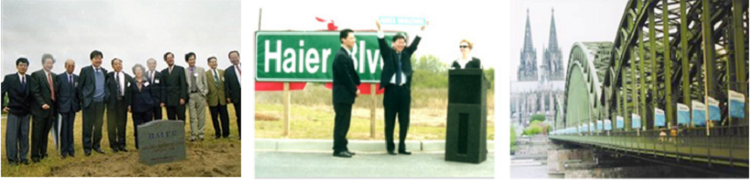

上个世纪九十年代末，海尔进入国际化战略正值中国加入WTO，很多企业响应中央号召走出去，但出去之后非常困难，又退回来继续做定牌。海尔认为“国门之内无名牌”，“不是出口创汇，而是出口创牌”，并且提出“下棋找高手”、“先难后易”，首先进入发达国家创名牌，再以高屋建瓴之势进入发展中国家。
1999年，海尔在美国建立第一个海外工业园时，受到很多质疑，当时很多媒体说，美国的工厂都到中国来设厂，海尔反其道而行的跑到美国去设厂，最后肯定以失败告终。媒体有一篇文章题目就是5个字“提醒张瑞敏”，还有媒体说：“别的企业到美国投资都不成功，海尔也很难成功”、“海尔等于是不在国内吃肉，却到国外啃骨头、喝汤。”
只看当时，海尔到美国去设厂肯定没有成本优势，但从今天来看，这无疑是个高度前瞻的、正确的决定，今天海尔满足美国当地消费者需求正是依托于美国南卡的海尔工厂。2001年，美国当地政府为感谢海尔为当地所做的贡献，无偿命名工厂附近一条道路为海尔路，这是美国唯一一条以中国品牌命名的道路。
海尔打造国际化品牌就是按照“走出去、走进去、走上去”的“三步走”思路。“走出去”阶段，海尔以缝隙产品进入国外主流市场；“走进去”阶段，海尔以主流产品进入当地主流渠道；“走上去”阶段，海尔以高端产品成为当地主流品牌。 这样，海尔逐渐在国际上树立品牌，成为中国品牌走向全球的代表者。